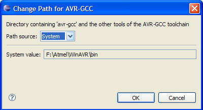

The plugin needs to know the paths to the avr-gcc toolchain and some other files on the development system. Usually these paths are included in the $PATH environment variable, however, especially on Linux distributions the included avr-gcc toolchain might be out of date or multiple versions of the avr-gcc toolchain might be installed.
The plugin tries to determine all required paths at runtime. Refer to AVR Plugin Path Management to see how the system paths are determined.
If you need to change the determined defaults, e.g. because you use multiple toolchain versions or the no default could be determined, you can change the paths manually.
Select Window > Preferences... and select the AVR > Paths tree item
Here all Paths are at their system default. Note that all entries are paths, even if they refer to a single file. In these cases they refer to the parent directory of the file.
Two different icons show warnings and errors:
 |
The current path is empty and should be changed to enable an optional features of the plugin |
 |
The current path is invalid and needs to be changed. |
To change a path, select it and click on the button.

The top line of the dialog has a short description of the path.
The Path source field is used to change the source type of the path. Three options are available:
System |
The path determined by the plugin. This path can not be modified |
Bundled
|
Select a bundled AVR GCC Toolchain Note: Not yet supported in the 2.3 version of the plugin |
Custom |
Select a custom path. Click on to select a new path. If the selected path is not valid an error message is shown. Note: For optional paths an empty Custom value is possible. A warning is generated but the empty path is still valid. |
After clicking on , the path settings are updated according to the changes.
AVR Plugin Path Management